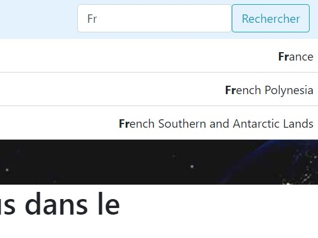
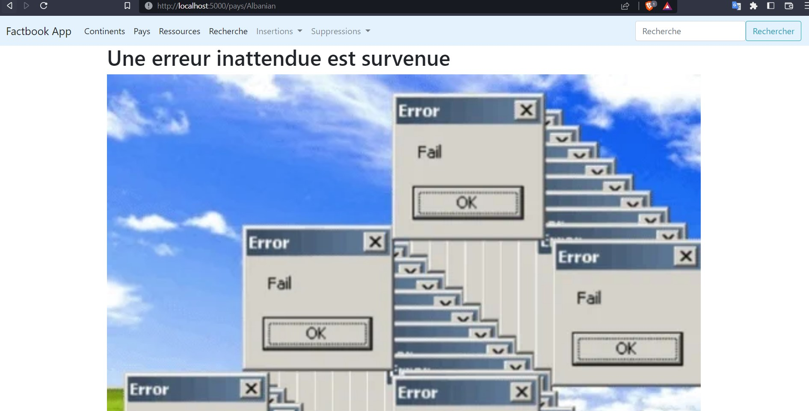

Insérer):

Ecrire une nouvelle route /insertions/ressource qui permette d'insérer une nouvelle ressource dans la base de données du factbook.
Le résultat attendu est le suivant (avec une transaction réussie au clic sur Insérer):
Sur le même principe que les routes /insertions, créer deux routes /suppressions:
La route /suppressions/pays devra proposer deux manières de supprimer un pays:
choices dans le formulaire, il est nécessaire d'aller chercher les propositions en base de données)La route /suppressions/ressource fonctionnera sur le même principe que /suppressions/pays.
Note: Exercice complexe mêlant routes Flask, Javascript et appels asynchrones, CSS, HTML et SQLAlchemy. Son objectif est de vous orienter progressivement vers des solutions techniques et méthodologiques qui seront nécessaires dans le devoir.
Il est courant, sur les sites Web, de trouver des champs de recherche où les propositions s'affinent en temps réel selon les caractères rentrés par l'utilisateur.
L'objectif de cet exercice est d'approcher de ce résultat en ayant le résultat suivant dans le champ de recherche rapide de la barre de navigation: 
Sans aller jusqu'à faire une recherche en base de données pour chaque caractère rentré, les propositions s'appuieront sur une liste de pays chargée depuis Javascript lors du chargement de la page.
Pistes de réflexion:
pays), le script Javascript de la barre de recherche s'exécute pour aller récupérer la liste des pays présents dans la base de données du Factbookconteneur.html, en manipulant HTML, CSS et Javascript<input> du formulaire de recherche rapide afin de pouvoir pointer dessus avec JavaScriptPour une meilleure expérience utilisateur, il est nécessaire de renvoyer des pages d'erreur plutôt qu'une erreur serveur. Pour cela, Flask offre bien sûr une HTTPException qui comprend le code d'erreur HTTP, mais offre aussi un décorateur très utile pour exécuter une fonction quand une erreur survient, et donc de renvoyer un template spécifique.
La lecture de la documentation Flask doit permettre de trouver le décorateur pour implémenter les pages d'erreurs suivantes:
Pour les erreurs 5XX, un rollback peut être nécessaire afin de rendre la base de données dans son état initial.
Le résultat attendu est le suivant pour l'URL /pays/Albanian: (une 404 serait préférable, mais en mode Débugage seule la 500 sera retournée)
